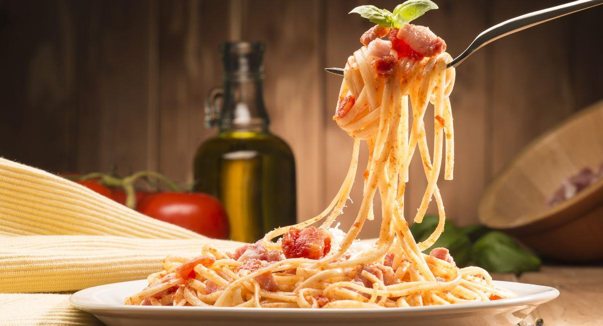

La tradicional pasta
La pasta es un pilar fundamental en la gastronomía italiana y ha sido parte de su cultura culinaria durante siglos.
es famosa por su variada y deliciosa selección de pastas, cada una con su historia y tradiciones regionales.
Explora nuestro contenido increíble
Bienvenido al delicioso mundo de la cocina italiana
La pasta es un pilar fundamental en la gastronomía italiana y ha sido parte de su cultura culinaria durante siglos.
es famosa por su variada y deliciosa selección de pastas, cada una con su historia y tradiciones regionales.
La pizza es un plato icónico que ha conquistado paladares en todo el mundo.
Su origen se remonta a la antigua Roma, pero fue en Nápoles, Italia, donde adquirió su forma moderna con ingredientes como el tomate y el queso mozzarella.
El tomate es el corazón de la cocina italiana. Ya sea en forma de salsa de tomate fresca para las pastas o como ingrediente principal
en la pizza, su sabor jugoso y versátil es una piedra angular de la gastronomía italiana.
El aceite de oliva virgen extra de Italia es famoso en todo el mundo.
Utilizado en ensaladas, para realzar el sabor de las carnes y pescados, o simplemente como aderezo para el pan, las aceitunas y su aceite
son esenciales en la cocina italiana.
El queso parmesano, con su sabor intenso y salado, es un queso duro que se utiliza para dar un toque final a platos de pasta y risotto.
Su presencia es fundamental en muchas recetas tradicionales italianas.